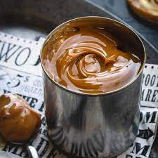

Dulce de leche
back to home page

This is what dulce de leche looks like
Ingredients needed:
- 4 cans of eagle brand sweetended condensed milk
- large pot
- 5 hours of time to spare
- ...that's it
Steps
- Peel paper thouroughly off of the eagle brand cans. Do NOT open the cans.
- Fill large pot with water and place on high heat
- Place cans in boiling water. Make sure the cans remain submerged. This means you must check back every 5-10 minutes to make sure water level has not evaporated below the tops of cans. If it has, fill with more water.
- Set a timer for 2.5 hours. Keep refilling the pot as needed and keep heat high enough that water continues to boil
- After 2.5 hours, use tongs to flip cans upside down. Set a timer for another 2.5 hours. Continue to fill water as needed
- After another 2.5 hours, (total of 5 hours) turn off heat and place cans in a safe spot to cool.
- When cans are cool enough to touch, dulce is ready to serve. Can be served hot or placed in the fridge and served cold. Goes great on top of most desserts and ice cream.